PREDAJ – luxusný investičný komplex pri kúpeľoch Piešťany
Piešťany
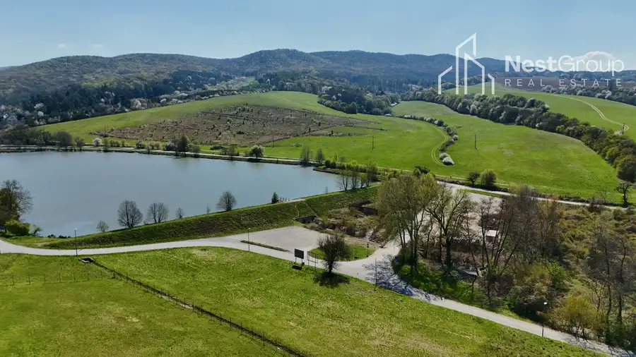
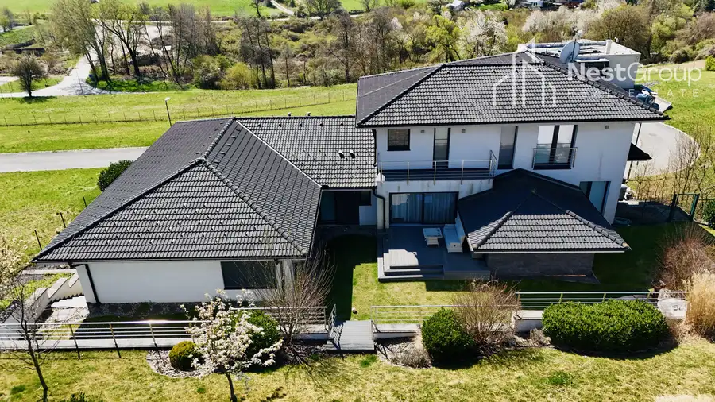
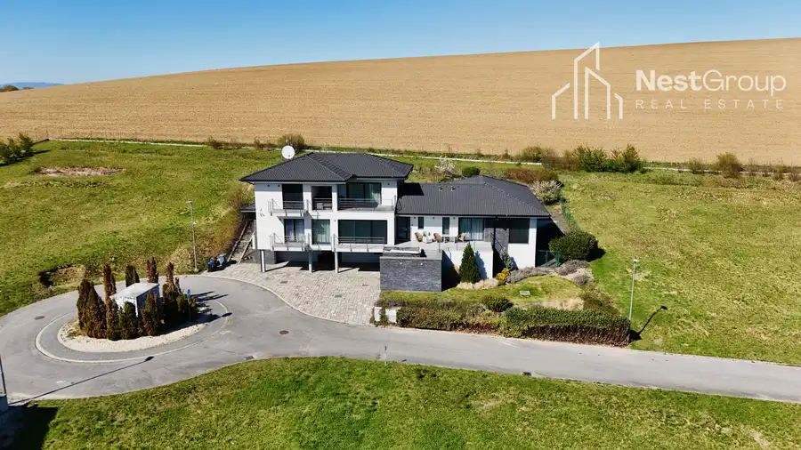
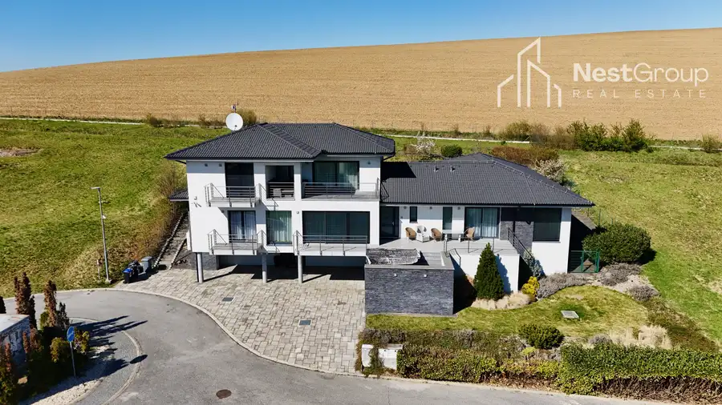
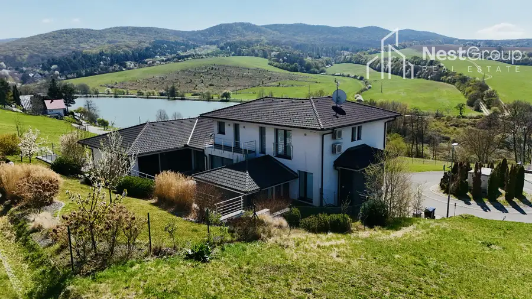
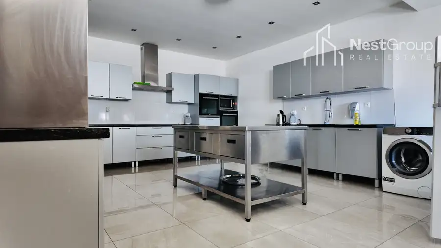
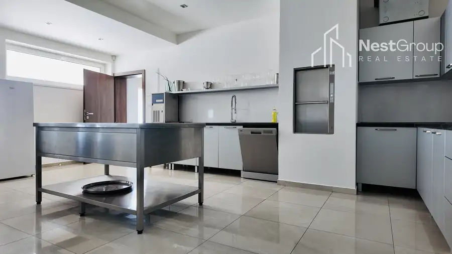
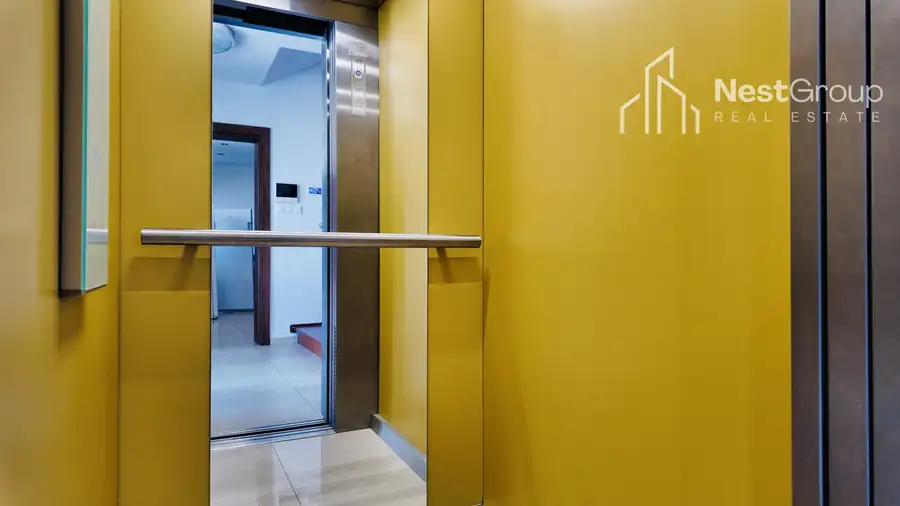
- Plocha529 m²
- StavNovostavba
- VlastníctvoIné
O nehnuteľnosti
Realitná kancelária NestGroup ponúka EXKLUZÍVNE na predaj luxusný investičný komplex pozostávajúci z dvoch víl s nádherným výhľadom na jazero Striebornica, kúsok od kúpeľného mesta Piešťany. Obrovský potenciál prináša nielen jeho využitie, ale i miesto, kde sa nachádza, z ktorého nebudete chcieť odísť. Poloha a charakter nehnuteľnosti je určený pre náročných klientov, ktorí ocenia jeho prevedenie, polohu a výnimočnosť tohto krásneho miesta. Vily sa nachádzajú v Moravanoch nad Váhom, v tichej lokalite, v uzavretom komplexe na kopci obklopenom prírodou. Vila je zložená z dvoch domov určených nielen na bývanie, ale aj na rekreáciu. V súčasnosti je jeho využitie komerčného charakteru, ktorý prináša výhodný benefit.Nehnuteľnosť je čiastočne dvojpodlažná, čiastočne podpivničená, s prestrešeným parkovaním v úrovni suterénu.Úžitková plocha: 462,17 m2, úžitková plocha balkónov: 67,65 m2.K domu prislúcha aj pozemok s rozlohou 1265 m2.Dispozícia:suterén: pomocný vstup so schodiskom, technické vybavenie, kuchyňa, sklad a miestnosť pre personál, pre ktorých slúži aj izba na medziposchodí.1.NP hlavné podlažie je prístupné z južnej terasy, z ktorej sa vstupuje do predsiene. Podlažie je rozdelené na obytné priestory vlastného domu a východné krídlo pre hostí s relaxačným zázemím s vírivkou a saunou s exteriérovou terasou.Časť pre hostí pozostáva z obývacej izby s kuchyňou a spálne s kúpeľnou a samostatnej izby s kúpeľnou, z predsiene je prístupné WC pre návštevy. 1.NP vlastného objektu pozostáva z obývacej izby s jedálňou a orientované na JV a SZ do záhrady s terasou. Na obývací priestor nadväzujú dve spálne s kúpeľňami.Nad hlavnou časťou sa nachádza ustupujúce 2.NP s tromi spálňami, kúpeľňami a terasou. Priestory využívajú prirodzené osvetlenie a vetranie doplnené núteným systémom vetrania, čo prispieva k svetelnej a tepelnej pohode vnútorných priestorov.VYBAVENIEDve vily prepojené dverami ponúkajú veľkorysý priestor s komfortnou dispozíciou. Objekt je klimatizovaný s vonkajším kamerovým systémom. Ponúka bezbariérový prístup – k dispozícii je nielen osobný výťah, ale i malý výťah z kuchyne pre bezproblémové podávanie jedla. Nehnuteľnosť poskytuje dostatočný komfort pre rodinné, ale i obchodné stretnutia. Sauna, vírivka, spoločenská miestnosť. 8 spální poskytuje priestor pre ubytovanie 17 hostí. Veľká vírivka pre 12 osôb, fínska + infra sauna, 2 sprchy zabezpečia wellness na úrovni, dostatočný oddych si užijete na vonkajšej terase, kde si vychutnáte krásny výhľad na upravenú záhradu. Veľkosť pozemku ponúka široké využitie, napr. na dobudovanie bazénu.Záhrada s parkovou úpravou ponúka veľkorysé trávenie voľného času. Stavba je realizovaná veľmi kvalitne, je vykurovaná 2 tepelnými čerpadlami typu vzduch/voda a má k dispozícii aj záložný elektrický kotol. V dome je podlahové vykurovanie a v kúpeľniach sú aj radiátory.Okná sú plastové s izolačným a bezpečnostným 3-sklom. Valbová strecha s krytinou Bramac, dom má kamenný obklad.Výhody, ktoré ponúka:- široké využitie (zabehnutý prenájom, podnikanie odovzdané na kľúč)- sauna- vírivka pre 12 osôb- výťahy- veľká reštauračná kuchyňa- nádherné tiché prostredie obklopené prírodou- každá spálňa disponuje vlastnou kúpeľňou, čo zaručuje maximálny komfort bývaniaLOKALITAVila sa nachádza v rezidenčnom a rekreačnom projekte Lake Resort Striebornica. Okolie prináša nádhernú prírodu, vodná nádrž Striebornica dotvára krásne prostredie a ticho. Dôležitá križovatka turistických a cyklistických trás. Obrovský potenciál prináša hlavne blízkosť kúpeľného mesta Piešťany (5 km) navštevovaného množstvom hostí nielen zo Slovenska, ale i zo zahraničia. Unikátna poloha zabezpečuje nielen pokoj a nádhernú prírodu, ale taktiež výborné spojenie (letisko Piešťany). V blízkosti sa nachádza kaštieľ Moravany nad Váhom, Chateau Krakovany, vynikajúce reštaurácie, golfový klub.PARKOVANIENehnuteľnosť ponúka 4 kryté parkovacie státia priamo pred vchodom.CENACena nehnuteľnosti na vyžiadanie v RK.Neváhajte nás kontaktovať o bližšie informácie alebo dohodnutie osobnej obhliadky nehnuteľnosti:PaedDr. Eva Gajdošová0907 816 704eva.gajdosova@nestgroup.sk
Parametre
- Druh
- Rodinný dom
- Dátum zverejnenia
- 26. 03. 2026
- Plocha pozemku
- 1265 m²
- Stav nehnuteľnosti
- Novostavba
- Typ
- Predaj
- Vlastníctvo
- Iné
- Vybavenie
- Sklad, Výťah
- Zastavaná plocha
- 380.54 m²
- Úžitková plocha
- 529 m²
Kde to je


Mohlo by Vás zaujímať
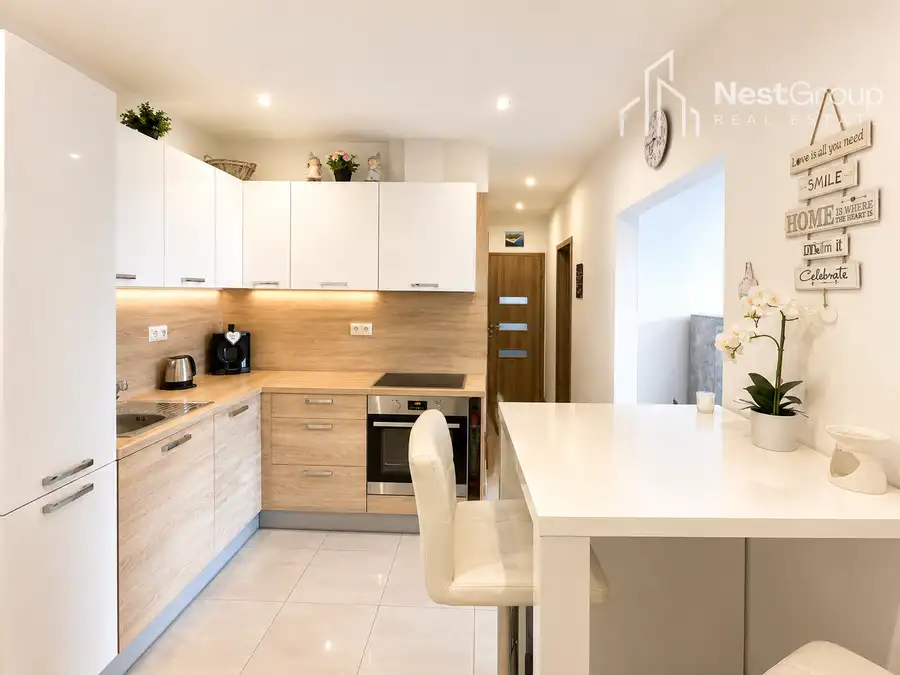
BytNové 260 000 €PREDAJ kompletne zariadený 2,5i byt na Hrobákovej ul., BA - Petržalka Petržalka, Bratislava 3-izbový54.83 m²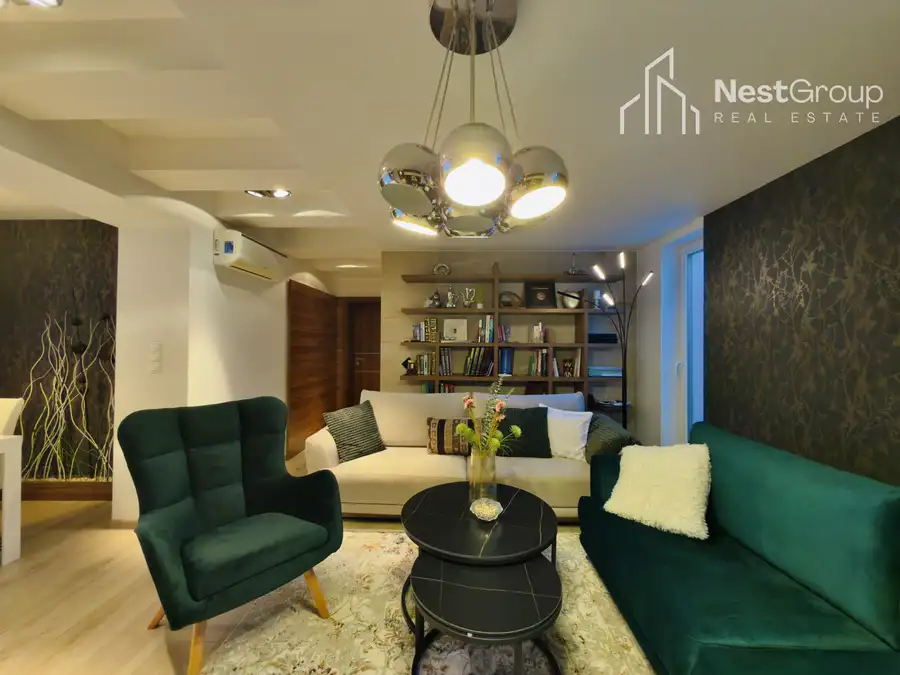
DomNové Cena na vyžádáníZNÍŽENÁ CENA RD so záhradou a garážou, Gruzínska ulica-Prievoz, Bratislava Ružinov, Bratislava 280.83 m²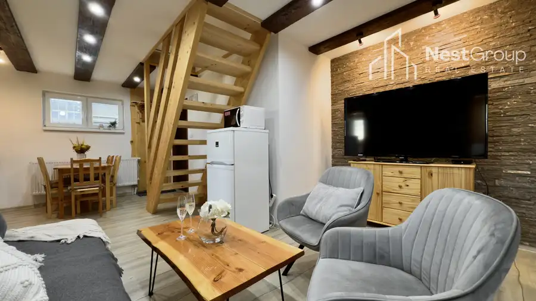
BytRezervované 170 000 €Štýlový 4-izbový mezonet, valčianska dolina Valča 76.06 m²